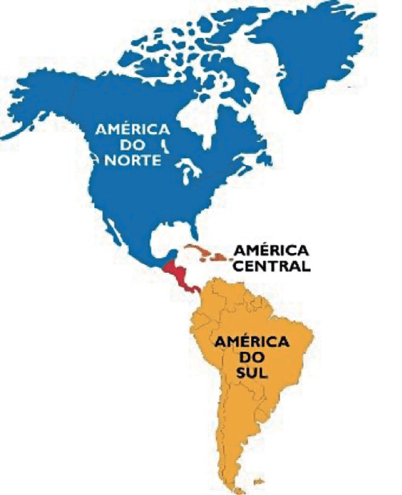
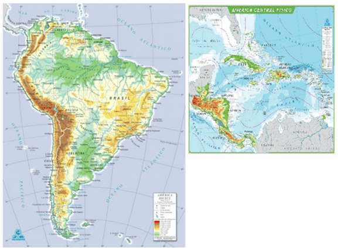
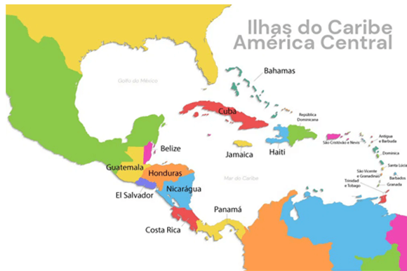
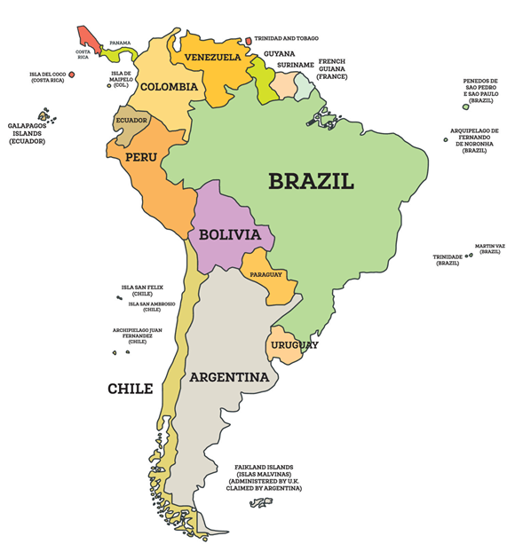
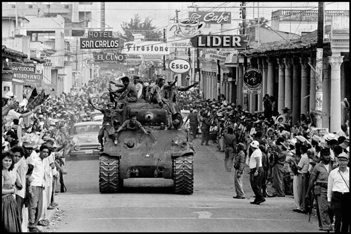
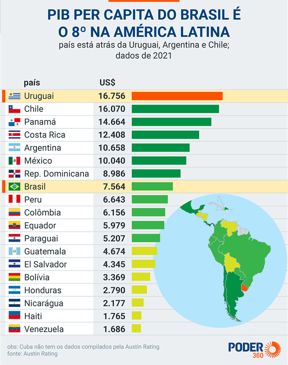

Objetivo: Relacionar o bloco econômico USMCA (antigo NAFTA) e sua relação entre Canadá, EUA
e México. Identificar aspectos físicos e humanos do Canadá e México. Caracterizar a questão do Quebec e a
influência da questão indígena na política mexicana.
Digite seu nome
Introdução
Na aula anterior vimos as características do México e do Canadá, países
que formam o bloco USMCA com os Estados Unidos.
Na aula de hoje vamos estudar os problemas da América Central e do Sul, além de suas principais
peculiaridades.
Questões para serem respondidas no caderno sobre o tema da aula de hoje:
1. Qual é a importância geopolítica da América Central e do Sul?
2. Quais são as principais características físicas das regiões da América Central e do Sul?
3. Como a colonização europeia impactou a América Central e do Sul?
4. Quais foram os desafios enfrentados pelos países da América Central e do Sul após a independência?
5. Em que aspectos a Revolução Cubana se destacou na América Latina?
6. Como o embargo econômico dos Estados Unidos afetou Cuba?
7. O que diferencia Cuba dos outros países latino-americanos em termos de sistema econômico e político?
8. Qual é o papel do Mercosul na economia da América do Sul?
9. Quais são as principais características econômicas dos países andinos?
10. Quais são os desafios e limitações econômicas enfrentados pela América Latina devido à dependência
de commodities?
1. Introdução

A América Central é uma região situada entre a América do Norte e a América do Sul, composta por sete países:
Belize, Guatemala, Honduras, El Salvador, Nicarágua, Costa Rica e Panamá. Geograficamente, a região é
caracterizada por cadeias montanhosas que se estendem ao longo de sua extensão, além de vulcões ativos e uma
rica biodiversidade.
A América do Sul, por sua vez, é dividida em várias sub-regiões, incluindo os Países Andinos e o Cone Sul,
onde se destaca o Mercosul, um importante bloco econômico. Ambas as regiões têm uma grande importância
geopolítica devido à riqueza em recursos naturais, como petróleo, minérios e biodiversidade.
Além disso, a América Central possui uma relevância estratégica por sua proximidade ao Canal do Panamá, uma
das rotas comerciais mais importantes do mundo.
2. Características Físicas

A América Central e do Sul são regiões com uma diversidade física impressionante, que vai desde altas
montanhas até florestas densas. O relevo é uma das características mais marcantes, com a presença dominante
das cadeias montanhosas, especialmente os Andes. Esta cordilheira, que se estende por aproximadamente 7.000
km ao longo da costa oeste da América do Sul, é a mais extensa do mundo e atinge alturas superiores a 6.900
metros, no Monte Aconcágua, na Argentina.
Além dos Andes, a região abriga vastas áreas de florestas tropicais, como a Amazônia, a maior floresta
tropical do mundo, que cobre partes de nove países sul-americanos. Essas florestas são não apenas cruciais
para a biodiversidade global, mas também desempenham um papel vital na regulação do clima da Terra.
Em termos de clima, a América Central e do Sul oferecem uma grande variedade. O clima equatorial predomina na
Amazônia, onde as chuvas são abundantes durante todo o ano, sustentando a densa vegetação tropical. Em
contraste, o Deserto do Atacama, no Chile, é um dos lugares mais secos do planeta, com algumas áreas que não
recebem chuvas há séculos.
As savanas, como o Cerrado no Brasil, também fazem parte do mosaico climático da região, caracterizadas por
estações de chuva e seca bem definidas. Este bioma é uma das savanas mais ricas em biodiversidade do mundo,
abrigando milhares de espécies de plantas e animais.
Essa combinação de relevo variado e climas diversos torna a América Central e do Sul uma região de grande
importância ecológica e geográfica, além de ser um verdadeiro tesouro natural que continua a fascinar
cientistas e viajantes de todo o mundo.
3. Colonização

A história da América Central e do Sul é marcada por um longo período de colonização europeia, que moldou profundamente a cultura, a religião e as línguas dessas regiões. Os colonizadores, principalmente espanhóis e portugueses, chegaram ao Novo Mundo no final do século XV, atraídos pela promessa de riquezas e novas terras. A influência europeia é evidente até hoje, com o espanhol e o português sendo as línguas predominantes, e o cristianismo, especialmente o catolicismo, profundamente enraizado na vida social e cultural.
A colonização não foi um processo pacífico. Pelo contrário, foi marcada pela exploração intensa dos recursos naturais e pela subjugação das populações indígenas. Ouro, prata e outros recursos foram extraídos em grandes quantidades e enviados para a Europa, enriquecendo as metrópoles coloniais à custa das economias locais e das vidas de milhões de pessoas.
Um aspecto sombrio dessa era foi o uso massivo de mão de obra escrava africana, especialmente no Brasil e nas plantações de açúcar no Caribe. Milhões de africanos foram forçados a atravessar o Atlântico em condições desumanas para trabalhar em minas, plantações e em diversas outras atividades econômicas, contribuindo para a formação de sociedades profundamente desiguais.
Mesmo após a independência dos países da América Central e do Sul, muitas das estruturas de poder e desigualdades sociais estabelecidas durante a colonização persistiram. As elites coloniais mantiveram seu poder e influência, enquanto a maioria da população continuou a enfrentar desafios relacionados à pobreza e à falta de acesso a oportunidades. Este legado colonial ainda é evidente hoje, influenciando a dinâmica social, econômica e política da região.
4. Independência Política e Subdesenvolvimento

Os movimentos de independência na América Central e do Sul marcaram o início do século XIX, com a maioria dos países da região se libertando do domínio colonial europeu. Inspirados pelas revoluções nos Estados Unidos e na França, líderes como Simón Bolívar e José de San Martín se destacaram na luta pela liberdade, resultando na criação de nações independentes. No entanto, a independência não trouxe automaticamente prosperidade ou estabilidade política.
Após a independência, muitos países enfrentaram dificuldades significativas para se desenvolver tanto politicamente quanto economicamente. A transição do colonialismo para a independência foi frequentemente marcada por instabilidade, com golpes de Estado, ditaduras e guerras civis. A falta de experiência em autogoverno, combinada com a influência contínua das elites coloniais, contribuiu para um cenário político volátil. Além disso, a economia das novas nações continuou a depender fortemente da exportação de matérias-primas, como café, açúcar e minerais, para os mercados europeus e, mais tarde, para os Estados Unidos.
Essa dependência econômica de produtos primários manteve a região vulnerável a flutuações nos preços globais, limitando o crescimento econômico e perpetuando o subdesenvolvimento. A falta de diversificação econômica significava que qualquer queda nos preços das commodities poderia ter impactos devastadores nas economias locais, exacerbando as desigualdades sociais e econômicas.
Para tentar superar esses desafios, diversas iniciativas regionais foram lançadas ao longo do tempo. Organizações como o Mercosul e a UNASUL surgiram com o objetivo de promover a integração econômica e política entre os países da região, buscando fortalecer as economias locais e reduzir a dependência de mercados externos. Essas iniciativas têm o potencial de aumentar a cooperação regional, melhorar a infraestrutura e criar condições mais favoráveis para o desenvolvimento sustentável. Contudo, a plena realização desses objetivos ainda enfrenta obstáculos significativos, como as diferenças políticas e econômicas entre os países membros e as pressões externas.
5. Questão Cubana

Fonte: https://otrabalho.org.br/
Cuba ocupa um lugar único na história e na geopolítica da América Latina. A Revolução Cubana de 1959, liderada por Fidel Castro, transformou radicalmente o país, estabelecendo um governo socialista que desafiou a hegemonia dos Estados Unidos na região. Antes da revolução, Cuba era amplamente influenciada pelos interesses econômicos e políticos dos EUA, com uma economia baseada no turismo, no açúcar e em outras exportações. A revolução, no entanto, trouxe profundas mudanças sociais e econômicas, incluindo a nacionalização de indústrias, a reforma agrária e o estabelecimento de um sistema de saúde e educação gratuitos.
Um dos eventos mais marcantes da história recente de Cuba foi o embargo econômico imposto pelos Estados Unidos em 1962, que continua em vigor até hoje. O embargo foi uma resposta direta à aliança de Cuba com a União Soviética durante a Guerra Fria e à expropriação de propriedades americanas na ilha. Esse bloqueio econômico teve um impacto devastador na economia cubana, limitando o acesso a produtos básicos, tecnologia e mercados internacionais. Apesar dessas dificuldades, o governo cubano conseguiu manter seu sistema socialista e implementar políticas sociais que continuam a ser um marco distintivo do país.
Cuba se destaca como uma exceção na América Latina por sua adesão ao socialismo em uma região predominantemente composta por economias de mercado. Enquanto a maioria dos países latino-americanos adotou políticas neoliberais nas últimas décadas, Cuba permaneceu firme em seu modelo econômico e político, com um controle centralizado e uma economia planificada. Isso resultou em um desenvolvimento econômico diferente, com avanços notáveis em áreas como a saúde e a educação, mas também com limitações significativas em termos de crescimento econômico e inovação tecnológica.
A posição única de Cuba também gerou impactos regionais significativos. As relações de Cuba com os Estados Unidos têm sido historicamente tensas, culminando na Crise dos Mísseis de 1962, que quase levou a um conflito nuclear. No entanto, Cuba também recebeu apoio de outros países latino-americanos, especialmente em fóruns internacionais como a ONU, onde a maioria das nações da região condena o embargo americano e apoia o direito de Cuba à autodeterminação. Apesar das dificuldades econômicas, Cuba continua a exercer uma influência cultural e política desproporcional ao seu tamanho, sendo um símbolo de resistência e soberania na América Latina.
6. Economia da Região

A economia da América Latina é marcada por uma forte dependência da exportação de commodities, o que desempenha um papel crucial na estabilidade e no crescimento econômico de muitos países da região. Produtos como petróleo, café, minérios e soja são os principais motores das exportações, gerando receitas vitais para os governos locais. No entanto, essa dependência também torna as economias vulneráveis às flutuações nos preços globais dessas commodities, o que pode resultar em crises econômicas quando os preços caem drasticamente. Por exemplo, países como a Venezuela, altamente dependente do petróleo, enfrentaram sérias dificuldades econômicas quando o preço do barril despencou no mercado internacional.
Dentro desse contexto econômico, o Mercosul (Mercado Comum do Sul) emerge como uma importante iniciativa de integração regional. Fundado em 1991, o bloco reúne Brasil, Argentina, Paraguai, Uruguai e, em períodos anteriores, a Venezuela, com o objetivo de promover o livre comércio e a cooperação econômica entre os países membros. O Mercosul busca não apenas facilitar o comércio intra-regional, mas também fortalecer a posição dos países sul-americanos no cenário econômico global. No entanto, o bloco enfrenta desafios significativos, como as disparidades econômicas entre os países membros e a necessidade de maior integração política e econômica.
Os países andinos, que incluem nações como Peru, Bolívia, Colômbia e Equador, apresentam uma economia caracterizada por uma forte dependência da mineração e da agricultura de subsistência. O Peru e a Bolívia, por exemplo, possuem vastos recursos minerais, incluindo cobre, prata, zinco e lítio, que são exportados para todo o mundo. Esses recursos são fundamentais para a economia desses países, mas a riqueza gerada nem sempre se traduz em melhorias significativas nas condições de vida da população local. A agricultura de subsistência também desempenha um papel importante, especialmente nas áreas rurais, onde muitas famílias dependem do cultivo de pequenos lotes de terra para sua sobrevivência.
Essa combinação de fatores econômicos cria uma paisagem complexa na América Latina, onde a riqueza natural convive com desafios estruturais, como a desigualdade social e a falta de diversificação econômica. A dependência de commodities, enquanto fornece uma base econômica importante, também limita o desenvolvimento a longo prazo e a resiliência dessas economias a choques externos. Por isso, muitos países da região têm buscado alternativas para diversificar suas economias e reduzir a vulnerabilidade associada à dependência de commodities.
"Há mais coisas no céu e na terra, Horácio, do que foram sonhadas na sua vã filosofia."
(Hamlet) Shakespeare
P:Como a diversidade climática da América Central e do Sul
afeta o desenvolvimento econômico da região?
R: A diversidade climática da América Central e do Sul influencia o
desenvolvimento econômico de várias maneiras. Por exemplo, o clima equatorial da Amazônia permite a
agricultura diversificada e a exploração de recursos naturais, enquanto o Deserto do Atacama, sendo um
dos lugares mais secos do planeta, limita as atividades econômicas e pode afetar a produção agrícola. A
variedade de climas pode criar oportunidades para diferentes tipos de cultivo e exploração de recursos,
mas também pode representar desafios como desastres naturais e escassez de água em certas áreas.
P:Qual é o impacto do legado colonial nas estruturas sociais
e econômicas atuais da América Latina?
R: O legado colonial tem um impacto significativo nas estruturas
sociais e econômicas da América Latina. As desigualdades sociais estabelecidas durante o período
colonial, como a concentração de riqueza e poder nas mãos de elites coloniais, persistem até hoje.
Muitas das estruturas sociais e políticas foram herdadas, influenciando a distribuição de recursos e
oportunidades. A colonização também introduziu sistemas econômicos baseados na exportação de
matérias-primas, que continuam a afetar a economia da região e a perpetuar a desigualdade.
P:Como o embargo econômico dos Estados Unidos afeta a vida
cotidiana em Cuba?
R: O embargo econômico imposto pelos Estados Unidos afeta
significativamente a vida cotidiana em Cuba. Ele limita o acesso a produtos básicos, tecnologia e
materiais necessários para o desenvolvimento econômico e social. Isso resulta em escassez de bens
essenciais, dificuldades na obtenção de medicamentos e limitações na infraestrutura. Apesar das
dificuldades, o governo cubano tem implementado políticas para minimizar o impacto, como o
fortalecimento do sistema de saúde e a promoção da educação, mas o embargo ainda representa um obstáculo
substancial para o bem-estar econômico e social da população cubana.